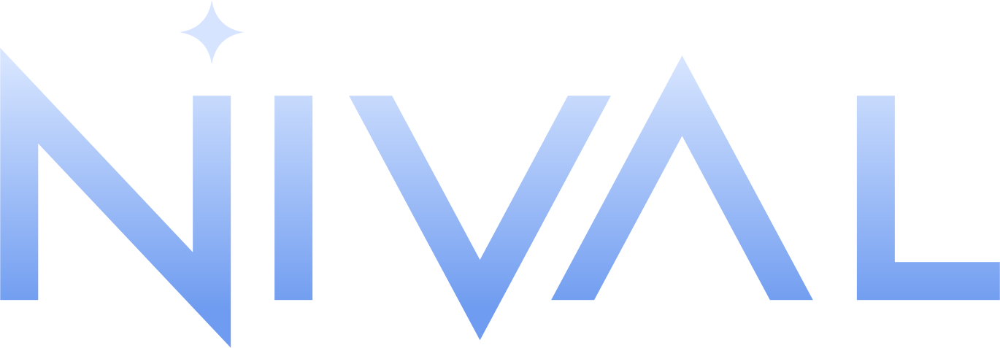

Nival Operator
A calendar with your Gmail and email alerts, running on your own computer.
What it does
- Calendar: month, week and day views, with breaks you can mark in your day.
- Mail: read, search, archive, write and reply to your Gmail.
- Watch: rules that tell you when a certain person writes or certain words turn up, right away or in your next break.
Your data stays with you
Nival Operator is a desktop app. It connects to Gmail directly from your computer and keeps your sign-in, rules and alerts there. There is no Nival server, no account with us and no analytics. Read the privacy policy for the details.